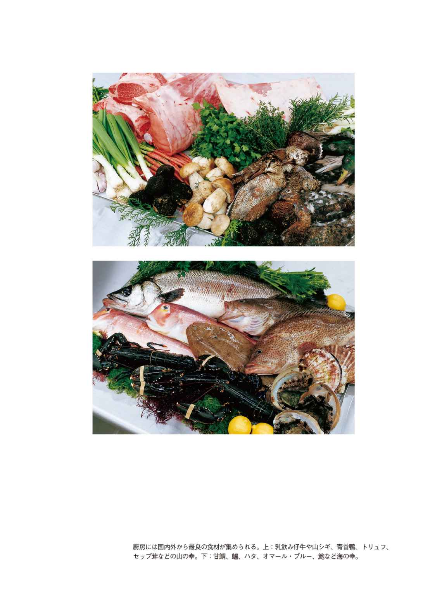
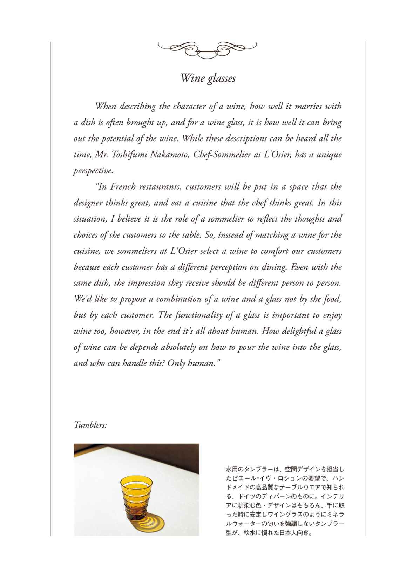

| The Story of L'OSIER 最高のレストラン「ロオジエ」最上のおもてなしの秘密 | |
| 橋本麻里 | |
| (2015) | |
マガジンハウス
THE STORY OF L'OSIER
最高のレストラン「ロオジエ」最上のおもてなしの秘密
橋本麻里
Prologue
はじめに
現代の美食の世界でもっとも大きな力を持っているのは、料理人の名前だろう。フランス料理の批評文化を代表する『ミシュランガイド』が星を与えるのは店に対してだが、店が料理人の名と同義になって久しく、スター料理人の名を冠した店を数え上げれば、たちまち両手の指では足りなくなる。「今度の週末は誰の料理を食べに行こうか」。こう考える人々は、１人の卓越した料理人が皿の上に描き出す個性や世界観、素材や様式に対する解釈を味わいに、店へ足を運んでいるのだ。同じ傾向は、ここ10 年ほどの洋菓子やパンの職人にも見られる。かつて店単位で語られていた味や技術に関する言説は、急速に個人へ収斂している。
和食や和菓子は、現在でも比較的店の名が優勢のように見えるが、寿司や天ぷら、蕎麦などのジャンルでは、個人名が取り沙汰される場合が多い。「料理の鉄人」のようなテレビ番組のヒットも、こうした傾向を加速させた要因のひとつだろう。優れた個人が評価されるのは別段悪いことではない。だが外食の楽しみや食文化が、一個人の能力が及ぶ範囲に限定されてしまうのは、いささかもったいない気がする。
生きるために必要な栄養とカロリーを摂るだけなら、なにもややこしい手続きは必要ない。美味しさを求めるのが次の段階だとしたら、その先にあるのは、「美味しさ」が食事を構成する要素の中のひとつであるような、別の言い方をするなら、目で見るもの、手に触れるもの、耳に聞こえるもの、香りとして吸いこむものすべての取り合わせの妙によって「美味しさ」が支えられているような、食をめぐる場の全体を「味わう」食の文化ではないかと思うのだ。たとえば日本料理における料亭、フランス料理におけるグランドメゾンと呼ばれる店が目指しているものも、ただ「美味しい料理」に終わらない、豊かで複雑な経験を提供することにあるはずだ。そしてそれは、料理人個人の努力や才能だけではなし得ない大きな事業でもある。
建築空間、内装、食器、調度、装飾にいたるまで、必要とされる経費が大きいというだけではない。すべてに質の高さを求めた上で、一貫して洗練されたセンスを衣食住の諸分野にまたがって発揮するのは、個人にはほとんど不可能に近い。だからそこそこ規模が大きく格の高い料理店には、たいてい「数寄者」と呼べるレベルで趣味のいいオーナー、もしくはパトロンがいて、料理人に腕をふるわせる一方、さまざまな分野の才能を集めて、店をプロデュースした。
社会がフラット化し、文化をパトロネージュできる旦那衆が消えた後では、時に企業がその責を担わなければならない。資生堂は有力な一員として、これまでメセナ事業などで存在感を発揮してきた。その一方で、日本を代表するフレンチレストラン〈ロオジエ〉のオーナーであることは、２００７年に刊行された『ミシュランガイド 東京版』で三つ星を取るまで、広く知られてはいなかった（ロオジエ・資生堂ともに、その関係を積極的にアピールしてこなかった）。
店名の〈ロオジエ（L'Osier）〉は、たとえば〈ジョエル・ロブション〉や〈アラン・デュカス〉のようなシェフの名前ではなく、この店が、そして資生堂自身が創業した、銀座の象徴である柳（osier）にちなんでいる。だからロオジエについて言及される時、業界の動向に関心ある事情通や常連客でもない限り、シェフの名から語り始められることは少ない。圧倒的多数の人にとってこの店は、「銀座・並木通りに面して建つ、王道の高級フランス料理店」なのだ。そしてそれは、ロオジエ自身がそうあろうと努力してつくりあげてきた、揺るぎないイメージでもある。
動画や短文投稿サイトなど、個人がメディアとなって情報を発信することが加速度的に容易になっているこの時代に、シェフの名やソムリエの名より遥かに大きく、店の名によって語られるレストラン。とかく個人を介して評されることが多い食の分野で、誰がと名指しするのが難しいほど総合力において抜きん出た存在として知られるロオジエは、私にとってかねてから興味の対象だった。やはり同じ角度から食のあり方に関心を持っていたのが、２０１３年11 月に創刊された月刊誌『アンド プレミアム』編集部（マガジンハウス）である。互いの志向が一致した結果、通常の店紹介や料理紹介とは異なる形で、ロオジエという店を徹底的に解剖し、その魅力を一つ一つ明らかにしていく記事の連載が企画された。
シェフ、支配人、ソムリエなど、店の顔となる「人」をストレートに紹介する記事はよくあるが、この連載では「もの」を前面に出すことにした。それをまとめたのが本書の第一章だが、もちろんレストランが「もの」だけでできあがっているとは考えていない。あえて「もの」に限定して語ることで、ものを選び、使いこなす人の存在が、影絵のように浮かび上がってくることを意図しているのだ。
取材がスタートすると、ワイングラス、カトラリー、テーブルリネン、椅子とテーブルから制服まで、店を構成するどんなささいな「もの」にも、それが選ばれるに至ったしかるべき理由があり、驚くような物語があることに気づかされた。こうした無数のものの集積としての店の姿が徐々に見えてくるにつれ、なぜロオジエが特別な存在であり続けているのか、どれほど個々の人間が努力を重ね、時間をかけ、経費をつぎ込んで「特別さ」を維持しているのかが、理解できるようになっていく。この「夢のお城」での食事のあと、勘定書に書き込まれる数字の根拠もだ。
連載では最後まで登場しなかった料理も、本書では収録している。「料理は４割」（人によっては「３割」とも）と厨房の料理人たちが当然のように口にし、それ以外の要素が６～７割を占めるロオジエであっても、核心が料理であることは間違いない。読者にとっても関心あるところだろう。だが写真を見るまでもなく、あるいは食べるまでもなく、「もの」の話、そして第二章、ロオジエにかかわってきた「ひと」の話を読んでいただければ、どんな方向性の料理か容易に想像がつくはずだし、その想像が裏切られることはない。ロオジエはある意味、完璧な球体のような店で、サービスで切っても、料理で切っても、建築で切っても、同じように「ロオジエらしい」と感じさせる完全な切り口を、きれいに見せてくれるからだ。
こうして店が明確な個性と輪郭を持つに至ると、訪れるゲストの方も、言葉にしづらいけれど確かに存在する「その店らしさ」を敏感に感じ取り、自らの振る舞いをその周波数に同調させようとする。いわば店とゲストの共犯関係が成立し、それを強化する方向へ力が働くのだ。銀座らしい。文化サロン的。かといって堅苦しくはなく、リラックスしている。スノビズムに陥らない。ユーモアがある......。そんな風に語られるロオジエの雰囲気は、店とゲストが互いにキャッチボールを繰り返しながら、40 年かかって共につくりあげてきたものだ。本書はこの希有な店ができるまでの過程を「もの」、そして「人」、それぞれの側面から紹介する。
本書は『アンド プレミアム』誌の連載「ロオジエのつくり方」（２０１３年11 月～２０１４年10 月）をベースに加筆・編集したものです。



12 年後も「新品同様」で使い続ける。
１９７３年の開店以来、移転や数度のシェフの交代を経て、いまや日本を代表するフランス料理店として名を知られるロオジエ。２０１１年４月から２０１３年10 月まで、経営母体である資生堂本社ビル建て替えに際して休業し、よりブラッシュアップした形で営業を再開した。ただ料理がおいしい、だけではない、この店を無二の存在たらしめ、固有の「文化」を生み出している豊かな背景を、ロオジエを構成する12 件の「もの」から検証していく。
歳月が輝きに柔らかなヴェールをかけた銀器は、１９９９年にロオジエが銀座・並木通りへ移転して以来、フランスの老舗〈ピュイフォルカ〉で揃えてきたものだ。テーブル用カトラリーの総数は約９００本。休業に入るやいなや、サービスのスタッフたちは２カ月ほどをかけて、そのすべてを磨き上げた。そして経年変化以外の人為的な傷みが見られるもの約８００本をピックアップ、メンテナンスのためにフランスへ送ったという。
「１年後に戻ってきたとき、向こうの職人からもらった『12 年使ったカトラリーとは思えず、どこを直せばいいかわからなかった。ここまできれいに使ってくれて、本当にありがとう』というコメントが、心からうれしかったことを覚えています。店の大小は関係なく、レストランで働く者として、ひとつひとつのものを丁寧に取り扱うのは当然のこと。テーブルから下げてきたナイフやフォークを洗い場で手荒に扱うのも、この店では禁止しています。シンクの中で金属が互いにぶつかって傷つくのを避けるのはもちろん、忙しいからといって客席裏での動作を省略したところで、短縮できる時間などたかが知れています。一事が万事、そうした行動の積み重ねが、店をつくっていくのだと思います」。サービススタッフを率いる支配人の内堀泰彦はこう話す。
それまで９００本を用意していても、営業中にカトラリーが足りなくなり、洗い返して使うこともあった。洗ったばかりで熱をもったカトラリーをテーブルに出すわけにはいかないため、いったん氷水で冷やし、あらためて室温まで戻す。こうなると、さすがにサービスも慌ただしい。そこで休業中、新たに買い足し、本数はさらに増えたという。そして今、ロオジエ「最古参」のカトラリーとなっているのが、１９９９年以前から使っていた〈クリストフル〉の銀器類だ。さすがにテーブルの上に出されることはないが、チーズやデザートをサービスする際のサーバーとして、なお現役で活躍している。
Cutleries:
ロオジエのカトラリー類を収めた引き出し。基本的にはすべて〈ピュイフォルカ〉のもの。中に一部、一時休業前から使っていた〈クリストフル〉や、肉料理に合わせて出す黒柄の〈ラギオール〉もある。サービススタッフの手で、毎日丁寧に手入れされている。
おいしさの先、ゲストの〝快さ〟に寄り添うグラス。
ワインといえば「料理とのマリアージュ」、グラスといえば「ワインのポテンシャルを引き出す」。そこにあるものを、２倍にも３倍にも膨らませて味わうのでなければ損をする、といわんばかりの語り口が当たり前になってしまったが、シェフソムリエを務める中本聡 文 の考え方は、だいぶ方向性が異なる。
「フランス料理店の場合、お客さまにはデザイナーがいいと思う空間の中に身を置いていただき、料理人がいいと思う料理を召し上がっていただきます。そこにお客さまご自身の意志や選択を反映していくのが、ソムリエの仕事だと思うのです。だから料理に合わせるのではなく、お客さまの快適さを考えてワインを選ぶ。食べ手が替われば、同じ料理でも感じ方が異なるはずです。この料理にこのワイン、ではなく、それぞれのお客さまにとって好ましいワインとグラスとを合わせたいと思っています」
もちろん「料理とのマリアージュ」を重視したワイン、「ワインのポテンシャルを引き出す」グラスを望むゲストに対して、ソムリエはその希望に最大限添う。だが中本さんは、まるでバーテンダーがゲストに合わせてカクテルとグラスを誂えるように、「このお客さまにはこんなグラスで」というイメージを重視したグラスを揃えることにも余念がない。
「機能性ばかりを追求すると、心躍るグラスが排除されてしまいます。たとえば、錦鯉のようにカラフルなグラスがあってもいい。注がれているものの色調が見えなくても、器やカトラリーとトータルでお客さまに合えば問題ありません。あるいはワインは香りがもたらす要素が大きいので、香りの雰囲気に合わせて選び分ける部分もあるでしょう。グラス自体の機能も重要ではありますが、結局グラスにワインを注ぐのは人間で、そのワインを生かすも殺すも注ぎ方次第ですから」
ワイングラスの基本的なラインアップは、改装前のロオジエでも使っていたロブマイヤーが中心となり、シャンパーニュ用が２種類、白・赤ワイン用が３種類、オードヴィ用が１種類で、合計６種類。それ以外の定番としてリーデル、バカラが脇を固める。また天井の高い空間には長い脚を持つ大きめのグラスが似合うという前提で、創業１００年を超える日本の老舗テーブルウエアメーカー・木村硝子店と組み、ロオジエ専用のシャンパーニュ、白・赤ワイン用グラス３種類も構想中だ。「おいしさ」は言わずもがな。その先にあるゲスト個人の「快さ」に添う。それがロオジエで使われるワイングラスの、基準なのだ。
Wine glasses:
ロオジエの基本となるロブマイヤーのワイングラス。右からシャンパーニュ用２種、白・赤ワイン用３種、コニャックやカルヴァドスなどのオードヴィ用。また「場」も意識し、ウェイティングスペースとメインダイニングで、出すグラスを替えることも。

固定観念を排した、ワインとの現代的なつきあい方。
ワイン好きの夢想をもっともかき立てる場所といえば「ワインセラー」であろうか。暗く静かな部屋の中で眠りに就く無数のワインたち、というイメージには、奇妙な吸引力がある。プロでさえ夢を見たくなるその空間で、あえてドライに合理性、利便性を追求しているところが、新装ロオジエ「らしさ」をもっとも反映している部分かもしれない、とシェフソムリエの中本聡文は言う。
「日本人が日常消費するワインの量は着実に増加しています。そんなお客さまが素晴らしい空間、素晴らしい料理、素晴らしいサービスのレストランへ来られた時、ワインの価格をどう考えるか。シェフの創造性で価値が倍増する料理と同じようには判断いただけないでしょう。しかも高級銘柄は私がこの店に来た 年代と比べても、約２～３倍に値上がりしています。そうした現実と、長年受け継がれていく資産としての在庫量、回転率などのバランスを、考え直す時期に差しかかっているのです」
ワインの夢と現実。ソムリエも表計算ソフトを操って在庫管理できることが条件となる時代である。調理場の面積が拡大したのに対して、ワインセラーの収容量は３分の２に減っており、「改良」とは言えないのではないか、という意見があることも、中本はよく理解している。だが倉庫に預けてある膨大な在庫に対して、店のセラーに置かれたワインは、いわば「フロー」。以前は、棚卸しの便を考えて１棚１種類12 本で４３０棚、棚にあるだけのワインをリストに載せていたが、新しい在庫管理のシステムを導入、１棚に２～３種類のワインを置くことで、リストに掲載するワインの種類を１・５倍にまで増やすことができるのだ。
「要は管理の効率化です。これで少なくともボルドー、ブルゴーニュの赤白で１４０種、シャンパーニュが１４０種は扱えるでしょう。棚数が少ない割に、入り口近くのスペースが広いのは、ワゴンごと食後酒を入れておくためです。ダイニングにワゴンを出しっぱなしにしておくと、食後酒のようなアルコール度数の高いものは、口に含んでおいしくない温度帯になってしまう。それを改善するためにセラー内に置き場を作りました」
以前からワイン以外のお酒、日本酒や焼酎も多少置いていたが、５年後の東京オリンピックが決まったことで、方針がはっきり決まった。和食洋食を問わず海外からやってきたゲストが「日本のレストランで日本の酒を飲みたい」と思った時、その希望に応えられるよう、少しずつ在庫を増やすことを計画している。
Wine cellar:
「お客さまに近づかなければならない」と中本。いわゆる五大シャトーのような、古典的な銘醸ワインでなくても、非日常を楽しめるワインは多種多様にある。やや狭くなったセラーは、決してネガティブではない形で現在のワイン事情に沿ったものだ。
頬ずりしたくなる「滑らかリネン」の仕上げ方。
ランチとディナーの営業が始まる少し前、ロオジエではサービススタッフがどこからかアイロンを持ち出してくる。テーブルに広げられたクロスにはもとより皺など見えないが、それでも一卓、また一卓と、まるで清めるように丁寧にアイロンをかけていくのが、この店の決まり。ゲストの口には入らずとも、直接その肌に触れるリネン類は、ロオジエという店の「感触」として、ゲストの記憶に残り続けている重要な要素のはずだ。
ロオジエで使っているリネンは、テーブルにかけられたアンダークロス、トップクロス、ナプキンの３種類（クロスなしでランチョンマットを敷くテーブルもある）。テーブルの種類ごとに微妙にサイズや形状が異なるが、いずれもエジプト綿の滑らかな触感や、繊細極まりない縫製が好まれ、各国王室や五つ星ホテルで愛用されているフランスの老舗、〈デ・ポルトー〉に特注して誂えたものだ。このほか、サービススタッフが持つトーションや、汚れをカバーするためのバーナプキン、化粧室のタオルも、同社で揃えている。〈デ・ポルトー〉のリネンを使うようになったのは、ジャック・ボリーがシェフとなった１９８６年以来のこと。今回、デザインを一新した後、同社から製品のクリーニングについて、業者を指定したいという申し出があったという。
「ロオジエで以前お願いしていた業者さんには、糊付け、プレス機、ローラーは使わず、ほぼすべてを手アイロンで仕上げてもらっていました。ホテルの宴会場で出されるような、糊でパリパリになった状態では、素材感が失われてしまい、お客さまが触れるリネンの質感として望ましくないからです。〈デ・ポルトー〉が指定した業者さんの方ではそうしたリクエストに対応できなかったため、より細やかに応じていただける業者さんにお願いし、仕上げは店で行っています」
ロオジエのクリーニングを担ってきた専門業者の質がいかに高いかを示すエピソードだが、支配人の内堀は「しかし」と続ける。手アイロン仕上げなら素材の風合いは生きるが、プレス機のように四辺を均等に揃えることができず、「見た目」は若干崩れ気味になる。だから最終的な調整を、店でのアイロンがけで行っているのだ、と。そんなロオジエにもひとつだけ、〈デ・ポルトー〉で揃えられなかったリネンがある。それがリニューアルオープンを機に採り入れた、日本ならではの「もてなし」の要、「おしぼり」用のタオルだ。馴染んだ潤いと温かさが緊張気味のゲストを寛がせる、今やそんな役割まで果たす必需品になっている。
Table linens:
テーブルクロスはシャンパンの泡をイメージした、ピエール＝イヴ・ロションによるオリジナルの意匠で統一。肌に触れる機会の多いナプキンは、綿の質感を殺さないよう、手アイロン仕上げ。パウダールームのハンドタオルも、〈デ・ポルトー〉のもの。
異国の花守。
エントランスの重厚なドアをくぐり、螺旋階段をたどって客席へ下り立った時、まず目を奪われるのは、吹き抜けへ向かって伸び上がるようにたっぷりと植物が生けられた、小さな庭のような一角だろう。生け替えのタイミングは不定期で、クリスマスや正月など、季節の移ろいや行事に合わせてデザインや素材を変えていく。リニューアルのための休業期間中、新しいロオジエの装花を担当したいという申し出は数多く寄せられたが、ロオジエ プロデューサーの尾形久兵衛の心中には、たった一人の候補しかなかった。２００５年、東京銀座資生堂ビルのクリスマスデコレーションで仕事を共にした、ベルギー出身のフラワーアーティスト、ダニエル・オストである。
「自分の思うとおり、洗練された作品を作らせてもらった資生堂でのクリスマスの装飾は、私にとって本当に特別な経験になりました。だからこそ今回、ロオジエからの依頼をお引き受けしたわけですが、実はこれまで、特定のレストランで継続的に、毎日飾られる花を手がけたことはなかった。ですからこれも私にとって貴重な経験のひとつなのです」
春まだ浅いこの日、花器から伸びる蠟 梅 の枝の鋭い直線の中を、雪柳の曲線、ジグザグの木瓜の線が縫い、牡丹のようにふくよかな花弁を重ねた大輪のラナンキュラスやトルコキキョウが、華やぎを添えている。
「ロオジエは内部の建築空間が非常に個性的ですから、それに応える、あるいは建築空間と共生するような作品でありたいと考えています。つまりあの吹き抜けの天井と一緒に見ることで『生きてくる』花、という意味です」
今回は日本でのイベントのための滞在中に、オスト自身の手で花を生けることができた。しかし日常の本拠地はベルギーであるため、生け替えのたびに立ち会うのは難しい。そこで作品のドローイングとそれを構成する花材のリストを日本のスタッフへ送って制作は任せ、画像を確認、次の生け替えまでメンテナンスを続ける、という手順で進めている。世界中で行われる展覧会や、プライベートな装飾の依頼に、その右腕となって同行し、オストのコンセプトと技術を深く理解しているスタッフがいてこそ可能になる作業だ。でもね、とオスト。「たとえばシェフやソムリエがそうであるように、このレストラン専属の花のデザイナーがいて、毎日花の世話をするのが理想的だと思うんです。そんなレストラン、まだどこにもないけれどね」。そう微笑んで、ウィンクした。
Flowers:
作品の性格上、花の「保ち」が優先され、素材の選択肢が限られてしまうのが課題。資生堂の顔であるロオジエなら、本当は真っ白な花弁に芯の黄色い椿一種をどっさり生けてみたい、とオストさん。（装花のデザインは定期的に変わっている）
自分のためではなく、ゲストのために着る。
このレストランを訪れるゲストが最初に接するのはドアマン......ではなく、予約の電話を受けるレセプショニスト。世界中からの空席の照会、会食時の「演出」の相談、席次の確認、アレルギー食材の対応まで、多彩な用件に素早く、的確に応答しつつ、込み入ったパズルのような予約を当てはめていく。彼女たちの知識や機転、配慮に優れた「名人芸」の応対は、ロオジエの知られざる財産のひとつだが、実際に扉を開けたところで迎えてくれるのも、同じメンバーだ。
この「店の顔」ともいうべきポジションにふさわしい制服のデザインをと依頼されたのが、小野塚秋良だった。〈ズッカ〉の創始者として知られる小野塚は、それ以前、三宅デザイン事務所在籍中から、ユニフォームや作業着が持つプロフェッショナルらしさ、格好良さに惹かれ、白洋社（現セブンユニフォーム）と組んで、ユニフォームの製造と販売を手がける〈HAKUI〉で活動してきた。そんな小野塚に対するロオジエからの注文は、「レセプショニストの制服を作ってほしい。素材はロロ・ピアーナで」というもの。
「こんな高級な素材を制服に使った経験はありませんでしたが、ひと言オーダーを伺って『分かってしまった』ので、少なくともコンセプトには迷いませんでした。しかも最初のミーティングでお会いしたレセプショニストの方はみな堂々として、スーツが着こなせるな、と確信できた。要するにタキシードのような、ヨーロッパの伝統や格式を体現した雰囲気、あるいは乗馬服が持っている貴族的な感覚とスポーティさを表現し、これから始まる素晴らしい時間を予感させて気分を華やがせつつ、お客さまよりは控え、簡素に見えるけれども、質の高さは感じさせればいいということです。具体的にデザインするのは難しかったですが、デザインを詰めていく過程は面白かったし、仕上がりも非常に気に入っています」
シャープな印象のタキシード風ジャケットは前身幅を狭くし、ボタンではなく執事を思わせる細い金鎖で留めている。ジャケット下に着たブラウスは秋冬が黒／ベージュ、春夏が白一色で、わずかに覗くフリルが華やぎを添え、さらに万一ジャケットを脱ぐことがあってもおかしくないよう切り替えを施した。そしてカマーバンドのように幅広のウエストを持たせたタイトスカートが、美しいラインを完結させる。翌年には移ろってしまう流行ではなく、変わらぬ本質を表現する。自分のためではなく、ゲストのために着る。「もてなしとしての装い」を完璧に体現したレセプショニストたちが、ロオジエの第一印象を作っているのだ。
Uniforms:
長年ファッションに携わってきた小野塚が指摘する「服がサマになるポイント」は、頭・首・肩のバランス。ロオジエのレセプショニストは全員「日本人には珍しいスーツが着こなせるスタイル」だという。デザイン前に全員とミーティングして方向性を決定した。
曇りなく輝く「ピット」。
全体が一望の下に見渡せる広々としたメイン厨房は約55 ㎡、他に食器や調理器具の洗浄室、仕込みスペースがあり、さらに約33 ㎡の製菓厨房が１フロアに収まっている。機能を詰め込んだステンレス塊の硬質な銀色、大理石の透けるような白に彩られ、コックコートをまとった12 名（製菓部門は別に５名）のスタッフが一体となって精密でグラマラスな料理を作り上げる空間は、Ｆ１、あるいはオーケストラの「ピット」にも似ている。
休業に入る２０１１年まで、10 年余り使用していた厨房機器の多くはまだ十分に使用可能な状態だった。だが２年半も運転を止めるとこうした機器は著しく劣化してしまう。また縦長で製菓部門が別フロアにあるなど、それまで使い勝手の悪い部分のあった厨房のレイアウトを一新する必要もあり、業務用厨房機器メーカーの「フジマック」と打ち合わせを重ねながら、新しい厨房が設計された。原案はエグゼクティブプロデューサーのジャック・ボリーが作り、細部を詰めたのが新たにエグゼクティブシェフに就任したオリヴィエ・シェニョン、シェフの山下泉だ。
熱源をＩＨ（電磁調理器）にするかガスにするかどうかという議論はあったが、「煮るにしても焼くにしても、やはりガスの火は素材への熱の伝わり方をコントロールしやすい」と、シェニョンはガス派。山下も「ソースを煮詰める作業は特に、ガスならではの長所が素材に生かされるように思います。ボリーシェフ時代から使っている銅鍋も、ガスの方が相性がいい」という。骨を焼いたり野菜をソテーしたりという仕込みスペース（バックキッチン）のガスレンジは以前よりも火力を上げ、その代わり広範囲に換気天井システムを導入、厨房内に熱や湿気が籠もらないようコントロールしている。
営業時間中にシェニョンが陣取るのは、厨房で調理された料理が盛りつけを整えて最終的にサービスに受け渡される作業台、「デシャップ」の傍だ。長く延びる大理石の天板は向かって右から前菜、魚、肉のスペースになっており、それぞれのポジションからスムーズに移動することができる。つり棚など視界を遮るものがないため、シェフが全作業を一目で確認でき、またスタッフ同士も互いの作業のフォローをしやすくなった。機器は充実し、より便利にもなったが、志は変わらない、と山下。営業終了後に全員で徹底的に清掃し、磨き上げる厨房は10 年後もきっと、曇りなく輝いているはずだ。
Kitchen:
シェニョンが厨房を指揮する定位置は、温かい料理が上がってくるデシャップのヒートライト下。さらに山下が手前で交通整理する。小さなトラブルは毎日起こるが、それを客席に感じさせることなく柔軟に立て直せる総合力を持った「ピット」。
大理石の効率。
厨房がレストランの「心臓」なら、今回はまさに「別腹」、パティスリー（製菓部門）を取り上げる。現在の〈ロオジエ〉では、メインの料理を食べ終えた後にまず一口のアヴァンデセール、次いで昼はメインのアシェット（皿盛り）デセール、夜は８種類から選べるメインのアシェットデセール、さらに作りたてのミニャルディーズ（小菓子）が昼５種類、夜４種類、そしてとどめとばかり、ショコラやコンフィズリー（砂糖菓子）などをシャリオ（ワゴン）で提供している。
以前はスペースの都合上、客席と厨房の下階にパティスリーが置かれていたため、パティシエには料理の進行状況がわからず、隔靴搔痒のもどかしさがあった。事前に作っておいたガトー（ケーキやタルトなど）を出していた時代はそれでも対応できたが、料理を食べ終わるタイミングを逆算し、「皿の上で仕上げる」アラミニッツのデセールを作ろうと思えばそうもいかない。今回はそんなパティシエの念願が叶い、メインの厨房の並びにガラスで仕切られたパティスリーが設置された。
面積も３割増しになったという厨房でまず目を惹くのが、中央に鎮座するコールドテーブル（作業台）の全面を覆う、白い大理石の天板だ。ただしことさら贅沢を望んだわけではなく、５名のスタッフで精密な構成のデセールを作るに当たって、限界まで効率を求めた結果。生地を捏ねるにせよ、ショコラや飴を扱うにせよ、素材と直接接触する天板は、基本的に低い温度を維持することが求められる。通常のパティスリーであれば、ステンレスの作業台の上に大理石ののし台を載せて作業するが、この厨房を率いる谷 田 代 は、スタッフがどの位置にいてもすべての作業が同じ条件で遅滞なく進められるようにと、天板そのものを大理石にした。壁際の作業台も同じ仕様になっている。
店を指揮する料理人が代わると、職場を移ったり独立して菓子店を始めるパティシエも少なくないが、谷田は「アラミニッツの緊張感や、料理人、サービスの方たちとのコミュニケーションなど、『レストランならでは』の部分が面白くて」、３代にわたる個性豊かな料理人の下で仕事を続けてきた。シェニョンシェフの料理が、寸秒を惜しんでその場で組み立てて完成させるスタイルのため、それに合わせてメインのデセールもアラミニッツで完成させるスタイルになっている。新シェフの描く「理想の皿」に近づけるための精度は、新しい厨房を得てますます高まっている。
Pâtisserie:
厨房の料理部門と製菓部門の空調は本来一括管理だが、製菓部門では作業時の温度を低く保つ必要があるため、特別に室温を下げられるようになっている。低温のパイルームなどを別に設けることはせず、全作業を同じ室内で行えるよう、室温は24 時間20 ℃が基本。
家具が作り出す贅沢な空間。
現在のロオジエはダイニングが36 席、個室サロンが10 席という構成だが、一番人気はダイニングの角、フロアから少し奥まった５～６人掛けの席だ。他のテーブルはすべて〈デ・ポルトー〉のリネンがかかっているが、このテーブルだけ素材のガラスをそのままに見せる。また脚の部分に縦型のＬＥＤ照明が仕込んであり、ガラスを透かした柔らかな光が、半個室状の空間全体を満たしている。ロオジエ プロデューサーの尾形久兵衛も特に気に入っているのはこの席だという。
「当初、ダイニングの角２カ所はガーデンにという提案もありましたが、フロアやソファ席の形状の都合で、５～６人用のスペースを作ることにしました。内装デザインを担当したピエール＝イヴ・ロションさんからテーブルのデザインが送られてきた時は素直に『すごいな』と。店全体で反復されているシャンパンの泡の意匠はここでも踏襲され、ガラス裏面に施された丸いモチーフがＬＥＤの光に浮かび上がる仕組みです」
そのガラスの美しさを活かすためにも、高級レストランではあまりないことだが、あえてリネンはかけずに、〈デ・ポルトー〉に特注したランチョンマットを使うことにした。他のダイニングチェアは一見同じ会社の製品に見えるが、張り地に同じ真っ白の革を張ってあるだけで、実はそれぞれ違うもの。フロアに置かれた角形の背の椅子は、ロションによるロオジエ用のオリジナルデザインで、ガラステーブルに合わせたのは、 年代にアメリカの家具メーカーが発表した型ながら、並べてもまったく違和感がない。
ダイニング、また１階のウェイティング・ルームいずれにも、ジャック・ボリーがシェフだった時代に、フランスで購入したアンティークのキャビネットやコンソール、アールデコ様式のガラステーブルなど、旧ロオジエをよく知るゲストに「再会」の喜びを感じさせる家具が並ぶ一方、店の顔である螺旋の大階段に敷かれた絨毯は、開店後半年で新品に敷き替えられた。角の擦れが予想外に早く目立ち始めたのだという。
椅子の張り地の白い革もそうだが、こうした家具類のメンテナンスには手間も費用もかかる。家具を丁寧に扱うこと、また毎日の掃除や手入れは当然全スタッフが実行しているが、それでも消耗は避けられない。年月が風格となって積もっていくものと傷も汚れもないもの、双方を使いこなしたインテリアが贅沢で特別な空間を作り出している。
Tables:
シャンパンの泡がモチーフのガラステーブルは天板より脚の加工、特にＬＥＤ照明をどれくらい配するかを工場の加工段階では決められず、現場で光量を調整しながら設置するのが難航。ちなみに「泡模様」はまず入り口のガラスの衝立として登場。

目でも味わえる店。
ロオジエでは目の前に料理がなかったとしても、ソニア・ドゥロネのタペストリーや、ジャン・コクトーのオブジェなど、「目で味わう」美術品を眺めているだけで十二分に愉しめる。こうした作品で店を飾るようになったのは、１９８６年からシェフを務めていたジャック・ボリーの要望で、ロオジエが並木通りに面した資生堂本社１階に移転した１９９９年以降のこと。
日本の大手建設会社が手がけるはずだった設計図は、ボリーが一蹴。福原義春会長（現在は名誉会長）から、「あなたの思うとおりにおやりなさい」というお墨付きを得て、ボリーと感覚を同じくする在日フランス人建築家のアルベール・アビュトと、「パリと銀座の記憶」「アールデコ」「銀座・並木通り」をキーワードに、建築、デザイン、フロアを飾る美術品にいたるまで完璧な空間作りを目指した。
この時は、様式は資生堂の創業年を超えない時点まで、というリクエストで、アビュトのスタッフが、アールデコ時代を中心に候補作品を選定。ボリーと共にパリへ飛んで購入作品を決定したのは、当時からレストラン全体の指揮を執っていたロオジエ プロデューサーの尾形久兵衛だ。
「ルーヴル美術館に隣接したモールに入っている美術商で作品を確認し、購入するものを決めていったのですが、その場でデポジットとして一部を現金で渡せという話になったので、慌てて札束を持って街の両替所に駆け込むなど、珍道中でした（笑）。当時はまだそれほど高いものではなかったので買えましたが、今は価格も高騰してしまっているようです」
今回のリニューアルに当たっても、美術品は室内装飾として使う前提で設計が進められ、若手作家の作品を中心に13 点ほどを新規に購入。以前からの作品と混在させたことで、一段軽やかで明るい印象にリフレッシュした。中でも尾形が「隠れた見どころ」と自負しているのが、女性用化粧室にかかるモノクローム写真のシリーズ。創業者・福原有信の三男として生まれ、資生堂初代社長として事業を継承・拡大する一方、日本近代写真黎明期のパイオニアとして活躍した福原信三の作品だ。当初は絵を掛けることを考えていたが、信三の写真の存在が浮かび上がってきた時、ピエール＝イヴ・ロションがぜひ使おう、と賛同した。20 世紀初頭のパリの街並みとセーヌ川の風景を写した連作は、資生堂とフランスとの長く深い絆を、静かに物語っている。
Art:
年の移転の際、〈オービュッソン〉に織ってもらったソニア・ドゥロネのタペストリーは、現在の店でもひときわ目立つ螺旋階段横に。抽象化された円、直線と曲線、そして鮮やかな色彩が奏でる心地よいリズムを、印象深く覚えている常連客も多いはずだ。
非日常の世界へ導く、劇的な動線。
資生堂は本社を含めた建物に、代々錚 々 たる建築家を起用してきたことで知られる。１９１６年、資生堂化粧品部の建物の改築は辰野金吾、１９６２年の資生堂会館は谷口吉郎、１９７５年の資生堂ザ・ギンザビルは芦原義信、２００１年の「東京銀座資生堂ビル」はリカルド・ボフィルが、それぞれ手がけている。
２０１３年に建て替えられた「資生堂銀座ビル」は竹中工務店が設計・施工を担当したが、その中に入るロオジエをどのように構成するのか。用意されたスペースは、地下１階、１階、２階まであり、その中から２フロア選ぶというもの。地下１階＋１階という選択なら必要な床面積を確保できるが、高級レストランを地階につくることは、欧米では慣例的に避けられてきた傾向でもある。特にエグゼクティブプロデューサーのジャック・ボリーは強く反対したが、最終的に面積を優先して、地下＋１階を選ぶことになった。
「たとえば日本での実績がない、新鋭建築家を起用した方が話題にはなるでしょう。ですが結局４人まで絞り込んだ候補者に会って話した中で、日本でも仕事の実績があり、国際的な評価を確立したピエール＝イヴ・ロションさんが、高級レストランとは、ラグジュアリーとは何か、ということをもっともよく理解され、『自分の作品』ではなく、ゲストにとって心地いい空間をつくることに長けていると判断しました。デザインにあたってこちらから出した条件は２つ。地下に『降りる』イメージを払拭してほしいということ、そして資生堂の創業年代を象徴するアールデコの様式を現代的に採り入れてほしいということでした。ロションさんは『自分もアールデコは現代建築の原点だと考えている』と言ってくれました」（ロオジエ プロデューサー・尾形久兵衛）
最大の懸念だった「地下」問題に対するロションの答えは、円形の店内中央に２層約９ｍにわたって吹き抜けをつくるというアイデアだった。ビルの構造上、吹き抜け部分を通るはずだった梁を、そこだけハの字形にずらすことで、実現に漕ぎ着けることができた。
完成してみれば、エントランスから吹き抜けをめぐる螺旋階段を下りて、ダイニングフロアへと導かれる過程に「穴蔵」感は払拭され、むしろ非日常の世界に入り込むための、劇的な動線となった。「いい建築だ」という賞賛ではなく、「素敵な夜を過ごせた」というゲストの溜息が成功の指標だという建築家の意図どおり、日夜ロオジエはゲストの溜息に満ちている。
Architecture:
「円形の吹き抜けをめぐる階段を下りるにつれて空間がどんどん広がり、最後にはその空間すべてがお客さまのものになる──そういう体験をしていただけるのです」とは建築家の言。フランスの三つ星シェフも次々来訪、いい店だと太鼓判を捺したという。
銀座の自然の一部を担う植栽。
カトラリーから建築までを紹介してきたこの章の、最後を飾るのは店の外、通りを行き交う人たちに対して「店の顔」となるエントランスと植栽だ。
ロオジエが入居する「資生堂銀座ビル」の建て替え（２０１３年秋竣工）にあたって、資生堂は本社社屋の周辺約１・５㎞以内の緑地や街路樹の多い道路などで、鳥類・昆虫類の生態調査を行った。
その際、銀座地区では種類・個体数が少ないものの、周辺の日比谷公園や浜離宮には多彩な動植物が生息していることから、ビルの緑化によって、銀座周辺を移動する鳥や虫の中継地点になる可能性があると結論。屋上と地上部分に、単なる建物の装飾だけに終わらない、地域の生きものたちにとって好ましい植物の育成を進めている。
一時のような狂乱地価ではないとはいえ、銀座・並木通りに並ぶビルは、いずれも容積率いっぱいに建てるのが「常識」で、セットバックはほとんどない。だが資生堂銀座ビルは歩道から約２～３ｍの余裕を確保、店のエントランス横から幅約60 ㎝の帯状に植栽を施した。また店内の空間同様、ピエール＝イヴ・ロションがデザインしたエントランスには、方形・球形に刈り込んだツゲの木を植え、シンメトリーに構成している。さらに１階ウェイティングからガラス越しに見える通路にも、借景のように見える木を植えている。主役は店の内部空間なので、その邪魔をしない、一歩引いた植栽だ。この地上部分、屋上庭園も合わせた、ビル全体の植栽のデザイン・管理を、竹中工務店の赤岩麻里子が担当した。
「エントランスには建築の一部となるような常緑のツゲの木を植え、いつも変わらぬ端正な印象を演出する一方、その横に伸びる植栽は、銀座周辺の多様な生きものたちと対話できるよう、クチナシやジンチョウゲ、カンツバキなど常緑の植物を16 種類、ユキヤナギやコデマリ、ウツギなど、落葉の植物13 種類を混植しています。色とりどりの紅葉を表現する『綾錦』ではありませんが、あるものは葉を落とし、あるものは花を咲かせ、といつも何かが起こっていて、全体でひとつの絵や景観として見えるような植栽で彩っていこうと考えました」（赤岩麻里子）
多少環境が悪くても育つ種類を選んでいるが、成長するペースや耐久性の違いなど、植物の個体差の調整も必要になる。植えて終わり、ではなく、日々コンディションが変化する植物たちの、細やかな手入れの繰り返しが、ロオジエの「顔」の、変わらぬ印象を保っている。
The entrance:
当初、エントランス上に掲げた〈L'OSIER〉のロゴは、光で文字が浮かび上がるものを予定していたが、ロゴを担当したグラフィックデザイナー・仲條正義さんからの、「ロオジエのエントランスを光らせる必要はない」という意見で、ブロンズに変更された。
ロオジエはいかにしてロオジエとなったか。
銀座にあって「フランスよりもフランス的な店」と形容されるロオジエ。その基盤を築いたのがジャック・ボリーであることに、疑いを差し挟む者はいないだろう。だが彼がシェフとして採用された経緯は、幸運な偶然、としかいいようがない。ロオジエの通史については「ロオジエの記憶と未来 」の節でお読みいただくとして、１９７３年、資生堂会館（設計：谷口吉郎）の全面改装（以後「資生堂パーラービル」と改称）に際して開店したロオジエは、資生堂パーラーの料理長を務めていた高石鍈之助がシェフに就任、厨房もサービスもパーラー生え抜きのスタッフが配置されたが、その中にフランスでの修業経験を持つ者は誰一人いなかった。既に70 歳近かった高石は、開店に先だつ１カ月間、パリ〈オテル・ムーリス〉の厨房に入り、若いコックたちに混ざって料理の研修を受けている。だがフロアにフランス語を理解できる者がいない。そこでパーラー出身ながらフランスのレストランで修業し、その後帝国ホテルに勤めていた松本暎を呼び戻す。ただしサービスマンとしてだ。帝国ホテルの総料理長だった村上信夫の下へ「松本を返してほしい」と、高石自身が挨拶に赴いたという。次に困ったのが、ワインのわかるスタッフがいないこと。これは経験豊富なソムリエ、渡辺實を招いた。下階につくったバー・ロオジエには、東京會舘でバーテンダーの経験のあった上田和男がチーフバーテンダーとして就任。ないない尽くしの中でどうにか漕ぎだした「フランス料理店」は、10 年ほど試行錯誤しながら営業を続けていく。
ロオジエ設立の計画は、後に資生堂の社長となる大野良雄が企画部長、現在名誉会長の職にある福原義春がその下で企画部次長を務めていた時に生まれている。後に福原は外国部長としてフランス進出を計画。１９８０年に完璧主義のメーキャップアーティスト、イメージクリエイターとして名を知られたセルジュ・ルタンスを起用したキャンペーンを展開する。これが奏功して、フランスのファッション誌『マリーフランス』が主催する化粧品業界のオスカー、「マリーフランス賞」を、１９８３年、１９８４年と連続受賞し、劇的な成功を収めた。一連の流れの中で、資生堂の経営陣が本格的なフランス料理、フランス文化を体感する機会も増え、結果としてロオジエにも「翻訳されたフランス料理」ではない、正統な本物のフランス料理を求める気運が生まれたのではないか──と、20 年来ジャック・ボリーの傍らで、プロデューサーとしてロオジエのマネジメント全般を担ってきた尾形久兵衛は振り返る。
そしてたまたまそのタイミングで、「職を探していた」のがボリーだった。ボリーはパレ・ロワイヤルの一角に店を構える三つ星の〈ル・グラン・ヴェフール〉から、当時は「月へ行くようなもの」だった日本へ渡り、１９７３年からホテルオークラの総料理長・小野正吉氏の下、メインダイニングの〈ベル・エポック〉で働いた。１９８２年には友人であるジョエル・ロブションの勧めもあり、権威ある「Ｍ．Ｏ．Ｆ．〈Cuisinier〉（フランス国家最優秀料理人賞）」に挑戦。厳格なコンクールを戦い抜いて、見事にＭ．Ｏ．Ｆ．〈Cuisinier〉の称号を得た。受賞の後に帰国し、一度はフランスで自身の店を開くものの、１９８６年には日本へ「帰って」来ることになる。
さてどうしようか、という時、たまたま銀行で会った友人から「資生堂でシェフを探しているようだから、やってみないか」と声をかけられる。資生堂が本格フレンチレストランをつくるにあたってのベンチマークのひとつが〈ベル・エポック〉であったこと、また面接した当時の大野良雄社長とは面識があったこともあり、その年のうちにボリーのシェフ就任が決まった。鳴り物入りで招聘したのではなく、たまたま縁のあったシェフ、ジャック・ボリーは、ロオジエにとってまさに「黒船」のごとき存在となるのである。
ところがシェフに就任してからわずか３日後、ボリーは辞表を提出した。「そこでの仕事が、私が思い描いていたものとはまったく違ったからです。当時の〈ベル・エポック〉が航空母艦だとすれば、〈ロオジエ〉は小舟のようでした。レストランには、お客さまに気持ちよく召し上がっていただくためのあらゆる配慮──従業員の心構えや空間、装飾も含めて、店を成り立たせる骨組みがなければなりません。それがまだまだできていなかった。悪気でも何でもなく、フレンチレストランのプロではなかった」。母国フランスなら「どうぞお辞め下さい」と速やかに辞表が受理されるシチュエーションだが、大野はボリーを引き留めた。
「恐らく大野さんは私が何をやろうとしていたのか、はっきりとはおわかりではなかったでしょう」。にもかかわらず、「ボリーさんの思うとおりにやってください」と、フランス人シェフにフリーハンドの裁量を与えた。その言に辞任を思いとどまったボリーが最初にしたのは、厨房の状態の改善であった。もちろん衛生的な基準を満たすだけの清掃は行っている。だが自宅より長い時間を過ごす職場を、なぜ同じだけ快適なものにしないのか、というボリーの指示は、当時のスタッフの常識を超えていた。次に料理と合わない皿やカトラリーを新しく購入する。そして窓にはまった荘重な格子装飾が息苦しく、楽しく食事をする雰囲気ではないからと、内装やテーブルのレイアウト、装花まであらためた。
パーラー始まって以来のフランス人シェフとその要求は、それまで日本のフィルターを通した、「翻訳されたフランス料理」を学んできたスタッフの間に葛藤や不安を引き起こしたはずだ。だが結果としてボリーに「日本人との仕事は非常にやりやすい」と言わしめるまでの、精密極まりない働きぶりを示すことになる。だからこそボリーは限界まで力を尽くして、料理ばかりにとどまらない、店全体のディレクションを貫徹できたのだ。
ボリーは言う。「料理について、高級店ではそれほど大きな差がつくものではありません。レストランは劇場のようなもの。美しく装飾された舞台、その上にあがるソムリエやメートルドテルという役者、彼らの演技、そしてお客さまが相まって作り上げる雰囲気、そうしたものが一体となって、店の個性を確立するのです」。ボリーの哲学とその実践に、資生堂の経営陣も応えた。大野は社長在任中、よく店に顔を出し、客を伴って食事することも一再ではなかった。そして誰よりロオジエの存在意義を重視していたのが、急逝した大野の後を引き継いで社長に就任し、名誉会長となった現在に至るまで一貫してロオジエの理解者であり続けてきた福原義春だ。
１９９９年は、ロオジエにとって記念すべき飛躍の年となった。それまでのロオジエは、言ってみれば未だに「単なる高級店」でしかなかったが、１９９７年、資生堂パーラービルの建て替えを機に、さらなる発展のために移転を計画する。当時のロオジエは９階建てビルの７階・８階を占めていたが、ビルの上階では高級なフレンチレストランは成り立ちにくい。また特別な時間を過ごすために美しく装ってくるレストランの客と、ジーンズでやってくるギャラリーの客とがエレベーターで乗り合わせざるを得ないのも、ボリーの目には無秩序だと映っていた。
青山に手頃なビルもあったが、ボリーは路面店、福原は銀座でという条件を譲らない。ならばと目をつけたのが、並木通りに面した資生堂本社ビルだ。世界中の高級ブランドが軒を連ねた、パリならRue du Faubourg Saint-Honoré（フォーブル・サントノレ通り）に当たる、銀座でもっとも洗練された界隈。その１階に入りたい、というリクエストがあり、会長となっていた福原が最終的に決断した。本社の顔というべき受付ロビーを隣の別館に移し、並木通りに面して門を構える前代未聞のレストラン。内装は日本の大手建設会社が担当するはずだったが、設計図を目にするやボリーは「これはフランス料理を供する空間の設計ではない」と、福原に直訴。「それならあなたの思うとおりにおやりなさい」という白紙委任状を得て、在日フランス人建築家のアルベール・アビュトと、「パリと銀座の記憶」「アールデコ」「銀座・並木通り」をキーワードに、一から店作りにかかわった。アンティークのキャビネットやコンソール、美術品をパリで買い揃え、何日もシャトーを巡ってワインを集め、開店に備えた。
そして１９９９年10 月、１階にエントランスとウェイティング、オフィス、２階に客席、ワインセラーを地下に配した上で、客席と同等の広さの厨房を備えた新生ロオジエがオープンする。客席数40 名に対して、厨房・サービス合わせた全スタッフは一番多い時で45 名、「グランドメゾン」の名にふさわしい質と規模を兼ね備えた、ボリーの料理哲学の集大成と言える店の誕生だった。
「料理は４割、サービスが６割」とボリーが言い、「料理、内装、サービスが三位一体となって初めてグランドメゾンたり得る」と尾形が応える。とかく皿の上の料理だけを云々しがちなレストランの評価に対して、ロオジエが目指したのは、ゲストの五感すべてを楽しませ、心地いい時間を提供することにあった。それははからずも、「美しい生活文化を創造する」と掲げた、資生堂の企業理念とも合致している。
朝の仕込みからディナーの最後の皿が出るまで厨房を離れることなく、責任を持ってすべての料理を見届ける。隅々までボリーの目の行き届いた新しいロオジエでは、パーラービル時代にはそれなりにあった空席も消え、夜ごと満席が続いたと、山下泉。１９８７年に新卒で、つまりボリーと同時期に入社し、２０００年、ボリーと中堅以下のスタッフをつなぐ仕事の要であるスーシェフに就任。その山下が、「いつまで続くのか」と溜息をついた再オープン以降の常時満席状態は、ボリー退任の日までついに解消されることはなかった。
だが満席の客に料理を出し続ける厨房は、常に静けさを保っていた。一番ボルテージが上がる（はずの）時間帯でも喧噪とは無縁に、わずかな指示とアイコンタクトの下で作業が進んでいく。テレビカメラが取材に入ることがあっても、目に見えるトラブルは何ひとつ起こらず、「ずっとシーンとしている」。「夜のサービスが終わって、ムッシュ（※ボリー）から『はい終わり』って言われると、取材クルーが困惑顔になるんです。『もっとこういうの（手をかき回して混乱を表現）ほしい？ そういうの、ウチにはない』で終わり（笑）。むしろ厨房のスタッフが騒ぐと、『ここは軍隊じゃない』と怒られた」と山下は振り返る。
ボリーは全スタッフに対して、二言目には「普通に」と言い続けた。「以下」は論外。「以上」もトゥーマッチ。プロフェッショナルとしていかなるミスもせず、パフォーマンスに流れず、バタつくことも怒鳴ることもなく、淡々と始まって終わるのが、最高の料理を出すための基本的な「構え」となる。そしてその「普通」を毎日毎日続けることが、もっとも難しいのだ、と。ロオジエはいったいどこまで「普通であり続けること」をやり遂げられたのだろう。
資生堂パーラー現社長の鈴木真が忘れられないのは、あるゲストからかけられた「飛行機に乗って時間とお金をかけてフランスまで行くより、その分をロオジエで過ごせば、フランスの真髄を味わうことができる」という言葉だ。ロオジエを語るときよく引き合いに出される、「フランスよりフランス的な」というフレーズがある。それは絶対王制下の中央集権政治とサロン文化の中で洗練を競い合い、ルイ13 世時代から評論の対象となってきた料理、そして饗宴を成り立たせる機知と思想、制度を磨き上げてきたフランスという国の、複雑極まりない陰影まで、味わうことができる、という意味に他ならない。
そうなれたのは、大野、福原をはじめとする歴代経営陣の理解あってのことだと、ボリーは機会があるごとに、繰り返し謝意を示し続けてきた。それはパトロンに対するリップサービスではない。投下された資本に見合う対価、揺るぎない価値を生み出してきたという自負に裏打ちされ、敬意から発せられた、誇り高い感謝の言葉なのだ。
２００５年、ボリーの退任に際して、『万物資生』（２００１年～２００８年に資生堂が刊行した情報紙）に寄せたコメントの中で福原は、ロオジエを「レストランのひとつの理想型」とし、それを実現したボリーの手腕を讃えた後で、「経営者の視点から見ると、ロオジエは資生堂の財務に何ら寄与するものではないし、所詮化粧品会社の道楽だという見方もあるかもしれない。しかし、断じてこれは道楽ではない。『ロオジエというブランドを持っている会社』ということが、資生堂全体のイメージにどれだけ寄与しているかを私は知っている」と結んでいる。
ロオジエの価値。
化粧品会社の道楽ではない、と福原は言った。ではロオジエを所有することが、資生堂にどのような価値を生んでいるのだろう。
１９９９年に資生堂本社１階へ移転してきた時ですら、まだロオジエのオーナーが資生堂だと知る者は多くはなく、資生堂側もロオジエ側も、あえてそれを喧伝してはいなかった。関係を公に──その表現もおかしな感じがするが──したのは、ボリーの去った後、ブルーノ・メナールがエグゼクティブシェフを引き継いでから３年目のこと。アジアで初めてのミシュランガイド、『ミシュランガイド 東京 ２００８』が、刊行された際、ロオジエがその三つ星の中の一店に選ばれた時からだ。尾形はそれを、「資生堂に恩返しができる」と表現した。
純粋に金勘定の面から見れば、高級フランス料理のレストランを持つことは、資生堂の利益にほとんど寄与しない。客席数と同規模のスタッフを抱え、最高級の素材を揃え、昼夜１回転のみ、予約で満員になったとしても、４人掛けの席に２人、３人が座るとなれば、全席が埋まるわけでもない。「だからといって、儲からなくてもいい、という話ではないんです」。現在、資生堂の企業文化、宣伝制作、広報担当執行役員を務めロオジエ担当でもある林高広は、冷静に指摘する。
２０１１年からの資生堂本社ビル建て替えに伴って２年半店を休業し、２０１３年10 月、装いも新たに新生ロオジエがスタートを切った時、ゼロから店を作り直すにあたって非常に大きな投資が必要になった。その時、ロオジエを持っているからこその資生堂であり、「本物のラグジュアリーの価値を理解している企業」という世の中からの信頼は、必ず化粧品事業にも反映されているはずだ、と。外から見たロオジエの価値が説明され、経営陣の理解を得られたのは、ロオジエにとっても資生堂にとっても僥倖だったことになる。それどころか、むしろロオジエこそ資生堂のフラッグシップブランドと言えるのではないか、というのが林の考えだ。
資生堂の前身は、明治５年、１８７２年に銀座出雲町１番地（現在の東京銀座資生堂ビルの所在地）で開業した、洋風調剤薬局にさかのぼる。薬局をつくった福原有信は、海軍病院の薬局長を務め、それまで日本になかった医薬分業を唱える進歩的な実業家、薬剤師だった。１９００年にはパリ万博の視察へ赴き、帰路にアメリカを訪れている。そこで立ち寄ったドラッグストアで、有信はただ薬を売るだけではなく、ソーダファウンテンを設置し、お客に清涼飲料水を提供している様子を目にした。カラフルな色つきの甘いソーダ水を、とびきりの笑顔で飲むアメリカ人たちの姿は、病人に薬を売る場所としての薬局、という有信の固定観念を、根底から覆した。
帰国後の１９０２年、有信はソーダ製造の機械からグラス、ストローにいたるまですべてアメリカから取り寄せ、薬局内にソーダ水とアイスクリームの製造・販売を行う「ソーダファウンテン」を開設。これが後に、「資生堂パーラー」へと発展することになる。有信の跡を継いで資生堂の初代社長となった信三は、フランス留学経験を持ち、自ら写真も撮る芸術家肌の経営者。社内に「意匠部」をつくり、ロゴマークやタイポグラフィなど、ビジネスの中にデザインを取り込む先見性もあった。そして現在も資生堂の指針となっているのが、「商品をしてすべてを語らしめよ」「すべてのことはリッチでなければならない」「ブランドは世界に通用するものでなければならない」という信三の言葉だ。
西洋の薬学の中から化粧水「オイデルミン」を嚆矢とする化粧品が生まれる一方、「東京銀座資生堂」といえば、天井にシャンデリアが輝き、オーケストラボックスで音楽が奏でられ、着飾った男女が洒落た洋食を楽しみにやってくる、花の銀座の憧れのレストランとして名を轟かせた。戦後、化粧品事業でトップ企業になるまで成長してきたとはいえ、そもそも資生堂の高級イメージを牽引したのは飲食事業の方だ。ロオジエはいわばその正統な後継者とも言える。
林は言う。「創業者たちの行動や言葉の中に、ただものが売れればいい、儲かればいい、という感覚は見えません。品質の高い本物であること、リッチであること、文化的な豊かさ、それらを表現し享受するための美意識、そしてお客さまへのおもてなし、そういった価値づくりへの信念を強く感じるのです。だからこそ、お客さまに喜んでいただける商品を作る、という誰もが言うことだけではなく、美しい生活文化を創造するのが企業使命だと言ってしまえる特別な会社なのです。そしてそれは、まさにロオジエが店全体で体現してきたことでもあるのです。ロオジエが存在すること、ロオジエを語ることで、資生堂の本質が見えてくる。私は本心からそう考えています」。
新生ロオジエ、ふたたび。
２００５年、60 歳を目前に、ジャック・ボリーはロオジエのエグゼクティブシェフを退いた。体力的に、ボリーが理想とする形で料理とかかわることが難しくなるから、というのが引退の理由。ボリーはスタッフと慰労会を催すこともなく、レシピ本や回顧録の出版にも関心を示さなかった。「ロオジエの歴史の中に、ジャック・ボリーというアルティザン（職人）がいたと記憶されればいい」からだ。
とはいえ、ボリーが完全にロオジエや資生堂から離れたわけではない。厨房でフライパンを握ることはないにせよ、エグゼクティブプロデューサーとしてロオジエの運営全般にアドバイスを与える立場にある。だが２００５年に新たにエグゼクティブシェフとして迎えたブルーノ・メナール、２０１３年からエグゼクティブシェフを務めるオリヴィエ・シェニョンの料理に対して、意見を述べることは一切ない。多くの候補の中から資質を見極め、シェフとして契約した時点で、その技術やセンスに対する確認は終わっている。かつてボリーが資生堂の経営陣から言われたのと同じように、「あなたの好きなように」と伝え、責任と権限とを渡し、思う存分力を発揮してもらう、というのがボリーなりのけじめだった。
自分の引退後を任せるために選んだ、５人のいずれ劣らぬ候補者の中から、日本という外国でフランス料理を作っていくための必須条件としてボリーが重視したのは、「人とのコミュニケーションがスムーズであること、いろいろな人と話ができ、リーダーシップを取るパワーのある人」。選ばれたブルーノ・メナールは、シャルル・バリエ、ジャン・バルデといった錚々たる料理人の下で研鑽を積み、１９９５年に来日。ザ・リッツ・カールトン大阪のメインダイニングのシェフを務め、米国アトランタのリッツ・カールトンではメインダイニングを全米自動車協会格付け「ファイブダイアモンド」へと昇格させた、名実ともに世界レベルのトップシェフだ。メナールは期待に違わず、２００７年から刊行が始まった『ミシュランガイド 東京版』で、ロオジエに３年連続の三つ星をもたらした。その直後、出張したパリの一流ホテルで、ドアマンから「三つ星おめでとうございます」と声をかけられた福原は、ロオジエがフランス本国で認められたことを実感したという。
そして２０１１年。１９９９年からロオジエが居を定める資生堂本社ビルにも、建て替えの時期がやってくる。ロオジエは再開を期して２年半の休業に入った。
２０１１年４月１日、資生堂パーラーの新社長として着任したのが林だった。ロオジエの最終営業日がその翌日、という巡り合わせも興味深い。本来３月末でロオジエの営業は終了するはずだったが、東日本大震災で３日間の休業を余儀なくされた。その期間の代替日として４月１日、２日まで営業を続け、予約を入れながら、震災の影響で店へ来られなかったゲストのために、席を用意したのだ。そのため、社員たちへの最初の挨拶がロオジエの解散式になってしまった、と林は苦笑する。そして支配人の内堀泰彦からの「もう一度集まって、また素晴らしい店をつくろう」という言葉を最後に、ロオジエは休業に入った。休業中の２年半、海外研修などに出かけて自分を磨きながら再開を待つ者もあれば、新たなキャリアを積むためにロオジエを離れた者も少なくない。しかし、厨房のスタッフ、サービスのスタッフともに、その大半が新しいロオジエで再会することになる。
本社ビルの建て替えはゼネコン主導で進み、オフィス等の割り振りがひととおり済んだ後で、ロオジエに対して使用可能なスペースの提示があった。地下１階～２階までの間で、２フロアを選ぶという条件だが、１階＋２階を選ぶと、必要な面積が確保できない。１階＋地下１階を選ぶと、必然的に客席が地下になってしまう。「高級フランス料理の店で、地下に客席をつくるなどあり得ない」。ボリーは最後まで反対したが、背に腹は代えられず、１階＋地下１階を選ぶことになった。そうなった以上、屋外の光を取り込むなど、内装の工夫で地下という雰囲気を感じさせない店作りで勝負するしかない。デザイナーの選定は99 年の移転時以上に困難を極めたが、最終的にラグジュアリーとは何かをよく理解し、表現することに長けた、ピエール＝イヴ・ロションに決定する。
ロンドンの〈ザ サヴォイ〉、パリの〈シャングリ・ラ ホテル〉、上海の〈ザ・ペニンシュラ〉など、世界中の名だたるラグジュアリーホテル、星つきレストランの内装を手がけてきたロションとの、東京でのキックオフミーティングが忘れられない、と林は言う。躯体を担当するゼネコンのスタッフが、ロオジエの入るフロアの構造の説明から口火を切った。天井はこう梁が通るから穴は開けられない、階段がつくれるとしたらここ、さまざまな制約を挙げていくのを、ロションが遮った。「ちょっと待ってほしい。まずは夢からはじめよう。あなた方がロオジエにどんな夢を抱いているのか、それを聞かせてほしい。多数の条件があるのは当たり前で、その制約に対する解決策を出し、あなた方の夢を叶えるために、私がデザイナーとしてここにいるのだから」。
結果として、ロションは梁をハの字形に配置することで、地下１階から１階まで、円形の店内中央に２層約９ｍにわたる吹き抜けの大空間を確保。１階の重厚なエントランスから、螺旋階段を下りてダイニングフロアへ誘われる仕掛けに、当初心配された穴蔵へ入るような感覚は微塵も感じられない。「躯体の条件が前提としてあり、その中でうまく内装を仕上げなさい、というのが世の常です。ですがロションさんは、まず夢の話をしようと言ってくれた。そこで我々も、資生堂の創業の精神からリッチであることの意味、装花からカトラリー、リネンにいたるまで、レストランのクオリティは何ひとつ妥協したくないこと、それを一つ一つ味わった上でお客さまが笑顔になるところが見たい、という夢談義を侃 々 諤 々 できたんです。全員で『じゃあこの夢を皆で実現しよう』と確認し合った、本当に記念すべきスタートでした」。
レストランの財産は人だ、と林は断言する。だから２年半の休業中は、可能な限りスタッフを研修に送り出した。ヨーロッパの王族が通う格の高い店を選ぶ者、客にも従業員にも日本人が１人もいない、フランスの地方にある店へ赴いた者など、それぞれの関心や伝 手 を頼りに、自身が学ぶ場を選んだ。彼らの持ち帰って来た経験は、必ず今後のロオジエの「進化」に資するはずだと、林は考えている。
ロオジエのアルティザンたち。
「料理は４割、それ以外が６割」。４：６であったり、３：７であったり、割合は人それぞれだが、ジャック・ボリーを筆頭として、ロオジエにかかわる人の多くがそんな言葉を口にする。かつての総責任者ジャック＝リュック・ナレが断言していたように『ミシュランガイド』は、皿の上の料理そのもののクリエイティビティを評価するという姿勢を崩していないし、レストランを名乗る以上、料理はもちろん店の核心ではある。だがそれ以上に、料理から内装、サービスまでが渾然一体となって体感される心地よい時間、幸福な食卓にだけ訪れる「今日のこの時が終わらなければいいのに」という経験こそ、ロオジエがゲストに対して提供したいと考えている最上の価値だ。そして美術品や家具、カトラリーから食器、グラス、リネンといった「もの」がいかに素晴らしいにせよ、結局のところそれを生かすも殺すも使い手次第、人次第。
新たなエグゼクティブシェフに就任したオリヴィエ・シェニョンは、２００５年から〈ピエール・ガニェール・ア・東京〉の総料理長を務め、ちょうどロオジエの一時休業と同時期に同店を辞して、フランスへ帰国しようとしていた。そのタイミングで、ボリーから次期シェフの候補に挙がっていることを知らされ、ロオジエ側との話し合いを重ねた上で、シェフ就任要請を受諾する。母国フランスではなく、日本での仕事を選んだ理由についてシェニョンは、「〈ピエール・ガニェール・ア・東京〉ではガニェール氏のエスプリを尊重した料理をつくらなければなりません。しかしロオジエでは私がつくりたい料理をつくることができる。それが非常に重要でした。ロオジエが名店であることは、この世界では十分知られていましたから、そうした店からの依頼ということにも、心を動かされました」。本国ではいま、昆布や鰹節など、日本料理の特徴である「うまみ」、醤油、山葵といった素材を採り入れた料理がもてはやされている。しかし現在のロオジエでシェニョンのつくる皿には、そうしたフュージョンの気配はない。「フランス的なフランス料理を期待して来店される日本人のお客さまは、日本料理の技術や素材を引用したフランス料理を求めてはいません。私も自分の中の、フランスの味を表現したいと思っていますし、クラシックな料理を基礎としつつ、時代の要請するものにも応えながら、お客さまに満足いただける料理をつくっていきたい」。
一方で、厨房・サービスのスタッフもそれぞれ半分が入れ替わっている。これはある意味ゼロからのスタートに近い。その補充のため、ロオジエではオープン前に、20 代のサービス担当スタッフを５名採用した。「リスクは当然あります」。開業後の数カ月は非常に緊張した状態が続いた、という内堀泰彦は、支配人としてサービスを率いる立場にある。「５年後、10 年後に全員が残っていることはあり得ません。ですが誰か１人でも残っていれば、その１人がサービスのトップになっているでしょう。だからあえて若手を採用したのです」。
開業の６カ月前からトレーニングを始め、３カ月前には店に入り、シミュレーションを重ねる。テーブルや椅子、カトラリーなど、すべての機材を揃えたトレーニングを始められた時には、開業まで１カ月を切っていた。開業直後のサービスについて、内堀は「その時点での１００％のパフォーマンスではあったと思います。しかし細かい部分があまりにもなっていなかった。テーブルへの配慮が行き届かず、お客さまにご迷惑をおかけしたこともあったのではないかと思います。それを修正して、修正して、今がある。申し訳ないし、みっともないですが、力を出し切れない99 ％ではなく、当時の正味１００％でした」と振り返る。
ゲストが望んでいることを瞬時に察知し、可能な限り要望に添うかたちで提供する。その対応は、相手が総理大臣でも学生でも変わることがあってはならない、と内堀は言う。判断はその都度、状況によって変わって当然だが、マニュアルのないロオジエのサービスにおける方程式は、原則的に「迷った時は面倒な方を選ぶ」「しかし時間がかかってはいけない」の２点に集約される。そして人に対する敬意を持ち、卑屈でも尊大でもない、「普通」という感覚を大切にすること。
一方、ソムリエのセクションを率いるシェフソムリエの中本聡文は、自らを「ものをつくらない職人」と定義する。料理やカクテルをつくる、という意味での「つくる」作業はなく、製品として完結したワインを選び、客席でサービスする、その前後に付帯するさまざまな作業までを仕事の範疇とする。中でも「もっとも難しいのはワインを注ぐこと」という中本の言葉は、謎めいて聞こえる。「６人のお客さまがいるとして、お一人お一人が『こう飲みたい』と思うタイミングで、あるいは快適だと感じる温度帯で注げるか、ということです。これはお客さまのグラスだけ見ているのでは難しい。お客さまが飲んでいる様子を集中して確認し、感覚を把握しなければならないからです。お食事を召し上がっている時は飲まずに、食べ終わったタイミングで飲まれる方。ゆっくり食事とワインの調和を楽しまれる方。十分な量を召し上がりたい方など、人によって飲み方は千差万別です。それぞれのお客さまの感覚に合わせた注ぎ方をするために、この仕事には集中力や、すべてのお客さまに十全に対応できる人数を必要とするのです」。
最終目標がゲストを楽しませ、満足させることだとして、そのためにどう考え、何をすべきか。食事のフォーマットやルールがはっきり決まっているフランス料理は、理論的な裏付けのあるサービスができる、と中本は言い切る。「個人のキャラクターや経験、容姿などに頼ったサービスに留まっている限り、日本の飲食業全体のサービス技術の向上はあり得ません。感覚ではなく、なぜこうするのか、という理由を理解した上で、質の高いサービスが継承されていくべきなのです」。
40 年の歴史を重ねてきたロオジエには、誇るべき職人が何人もいる。支配人の内堀、シェフパティシェの谷田代がロオジエに配属されて24 年。シェフの山下は28 年。５年周期で店を替わり、キャリアアップしていく働き方は当然ある。「しかし逆に、ひとつの店に長くいるからこそ見えてくるものもあるはずだと思っています」。またロオジエに入ってから15 年目となる２０１４年、厚生労働省が卓越した技能者を表彰する「現代の名工」に選定された中本の言葉は「ワインは、購入してすぐ真価を発揮するというものではありません。必要なだけの熟成を加えることで、付加価値をつける。それが会社にも利益をもたらす。購入したワインに対して責任を負っていますから、たとえば休業するから辞める、というのでは、自分の責任を放棄することになる」。店と共に、豊かな成熟を遂げてきた彼らが描く未来図は、どのようなものなのだろう。
「店のもっとも重要なアイデンティティは、ロオジエの名です。そしてそれを継続していくこと」。「シェフとサービスと店が一体になっているべきで、シェフの名前だけが取り沙汰されるのは好ましくない。シェフが代わってもサービス、あるいは店のアイデンティティが継続していかなければ」。「目標はロオジエというレストランが、この先もずっと存在し続けることだと思っています。先輩方がここまで築き上げてきたものを、次のスタッフに受け渡すこと。といっても惰性で続くのではダメで......やはり『普通』に。それが理想です」。「スターシェフのつくる料理」ではなく、「文化と哲学を持ったフランス料理店」として評価されること。その最善のありようを「普通」のものとして、継続していくこと。それがロオジエという店が自らに課した、これからの使命なのだ。

History
ロオジエの記憶と未来
谷崎潤一郎が「冷たい、爽快な、胸の透き徹るような液体（『金と銀』、１９１８年）」と、また早稲田大学教授で美術史家の安藤更生が「いかにもメタリックでなにか非常に高貴な金属の溶水を飲むような気がする（『銀座細見』、１９３１年）」と讃えたソーダ水が、資生堂薬局内のソーダファウンテンで売られるようになったのは、１９０２年のこと。これがロオジエを筆頭に、今日まで続く資生堂パーラーの礎となった。ソーダファウンテンが誇るもうひとつの味、アイスクリームを贔屓 にしたのは永井荷風だ。江戸前の文豪をして、「資生堂のアイスクリームを食べたら、他のは駄目ですよ」と言わしめた味は、夏冬を問わず常に店頭にあったため、冬の深夜、病床からアイスクリームを求める病人の家族に宿直が対応し、喜ばれたというエピソードも残っている。
関東大震災で一度は焼失した店も同年には再建、１９２８年には本格的に建て替えられた。客席中央をシャンデリアの下がる吹き抜けとし、回廊式になった２階客席からは１階を眺めることができる。２階正面に設けられたオーケストラボックスでは、日本交響楽団（ＮＨＫ交響楽団の前身）の演奏が楽しめた。映画評論家の荻昌弘氏は、その空間の壮麗を「あのお伽の国の城門みたいな感じのする入口から洋酒売場を抜けて、天井の高い資生堂パーラーへ入るときの、あのシーンとした白い感触（『銀座の食べもの屋』、１９６２年）」と記して懐かしんだ。
資生堂が磨き上げてきた食文化の揺籃からついに「ロオジエ」が産声をあげるのは１９７３年のこと。高石鍈之助を初代料理長として始まったロオジエ最初の10 年は、黎明期と言える。９階建てビルの７、８階にバーとレストラン、下の６階にメインキッチンという構造が料理にとって最善の環境ではないことも含め、ロオジエは解決すべきさまざまな問題を抱えていた。そのすべてを変えたのが、１９８６年にロオジエへやって来たジャック・ボリーその人である。
ボリーのドラスティックな改革については、第二章に詳しい。理解を得られなかったり、摩擦が起こることもあった。しかしボリーは「２～３年後の変化を見れば誰にでもわかる」という確信を持っていた。その確信どおり、アンティークの家具や美術品をちりばめた、洗練されたインテリアや、古典的な骨格を持った正統派のフランス料理は、瞬く間に一流の顧客たちを魅了したのだ。そして１９９９年、高級レストランはビルの上層階にあるべきではない、というボリーの提案を容れ、福原会長（現名誉会長）は、銀座・並木通りの資生堂本社１階ロビーだった場所を、ロオジエに明け渡した。

東京最高のフレンチレストラン、という評価を恣 にしてきたロオジエの厨房から、ボリーが引退することを決めたのは、60 歳の節目の歳を目前にした２００５年。後継者として選ばれたのは、ボリーより20 歳近くも若い、当時43 歳のフランス人シェフ、ブルーノ・メナールだった。「30 年前からロオジエに通い、私などより遥かによく店を知るお客さまがいらっしゃる。その門をくぐったとき、自分をトップシェフだと思っていた私にいま必要なのは、テクニックではないと悟りました。ロオジエのエスプリを受け継ぐには、ハートで料理をしなくてはならない。ハートでお客さまやスタッフと通じ合わなければならない。そのことが理解できたのです」。就任に際して、メナールはこんな風に語っている。そしてメナール在任中の２００７年、『ミシュランガイド』東京版刊行の初年度から改装前の一時休業に入るまでの３年間、ロオジエは三つ星連続受賞の栄誉に輝いた。
２０１３年、資生堂本社ビルの建て替え後に、ロオジエはオリヴィエ・シェニョンを新たなエグゼクティブシェフに迎え、料理も内装も一新。人間の年齢で言えば「不惑」を超え、シェフの名前ではなく、料理、ワイン、サービス、インテリアまでを含んだ特別な経験を提供する場として、「ロオジエ」の名は世界へ届くようになった。その価値を減ずることなく、店を未来へつないでいくこと。それがロオジエにかかわるすべてのスタッフの願いなのだ。
ロオジエ
透視図＆平面図
ロオジエという店の全体像は、写真だけではなかなかわかりづらい。そこで立面図と平面図に描き起こしてみた。透視図ではまず、１階から地下１階までを結ぶ吹き抜け空間の、巨大なボリュームが実感できるとともに、地上とのつながりを強く感じさせる構成としたことで、地階ならではの「穴蔵感」が払拭されているとわかるはずだ。
一方平面図からは、具体的な店の構えが見えてくる。重厚な玄関から、ゆったり間を取ったウェイティングスペース、その裏側にあるレセプショニストたちのオフィスエリアが１階。そこから螺旋を描く階段を下り、客席に着いてしまうと目には入らないが、サービススタッフが銀のトレイを捧げて出入りする向こう側には、顔が映るほど磨き上げられたステンレスの間で料理人たちが立ち働く、清潔で機能的な厨房が広がっている。

Epilogue
おわりに
筆者自身は食を専門とする書き手ではないのだが、資生堂の企業文化に関わる部署と仕事をする機会が多かったことから、いつの間にかロオジエにもつながりができていた。恐らく皿の上だけに興味を固定できず、落ち着きなく周囲を見回し、リネンがあれば撫で、こっそり皿の裏を返して製造元を確認し、メニューの書体に目を凝らし、エントランスから客席まで１分で歩ける距離に飾られた美術品一点一点の前で立ち止まらずにいられない性分のせいで、このような機会をいただけたのだと考えている。要するに、ロオジエにはものであれ人であれ、食事だけでは済ませられない愉しみが多すぎるのだ。多彩な分野にわたるその複雑さこそが、レストランとしてのロオジエの最大の魅力であり、唯一無二の強みでもあるのだろう。味や調理技術が第一に語られる分野にあって、料理以外の領域にこれほどボリュームを割いた、ある意味「非常識」な本作りができたのは、幸運だったとしか言いようがない。
雑誌連載時、また単行本化するにあたって、取材・撮影にご協力いただいたロオジエスタッフの皆さんには、本当にお世話になりました。朝８時には既に仕込みが始まっている厨房へ無遠慮に入り込み、営業前の準備に追われるサービスチームにまとわりつくことをお許しいただいたおかげで、本書を完成させることができました。お一人お一人の名前を挙げることは紙幅の都合上難しいので、要望を全て受け入れて下さった支配人の内堀泰彦さんに代表で御礼申し上げると共に、前掲の集合写真の勇姿をもって、全スタッフに貫徹するそのプロフェッショナリズムを讃えたいと思います。また料理を後まわしにした本書の非常識な構成に、理解と寛容を示してくださった株式会社資生堂、株式会社資生堂パーラーの「大度」にも、心から敬意を表したいと思います。
そして連載時の担当である『アンド プレミアム』編集部の渡辺泰介さん、また単行本の編集を担当してくださった書籍部の山際恵美子さん、雑誌連載時の撮影をしていただいた平野太呂さんに、「戦友」としての感謝と敬意を送ります。
２０１５年 ３月 橋本麻里
橋本麻里 はしもと まり
１９７２年、神奈川県生まれ。国際基督教大学卒。日本美術を主な領域とするライター・エディター。明治学院大学・立教大学非常勤講師。著書に『京都で日本美術をみる【京都国立博物館】』集英社、『変り兜 戦国のCOOL DESIGN』新潮社、『日本の国宝１００』幻冬舎。共著『恋する春画』『運慶 リアルを超えた天才仏師』新潮社、『チェーザレ・ボルジアを知っていますか？』講談社ほか多数。
この作品は２０１５年３月にマガジンハウスより発行された「The Story of L'OSIER 最高のレストラン「ロオジエ」最上のおもてなしの秘密」の電子書籍版です。